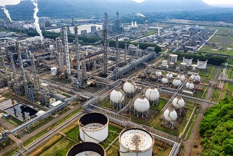
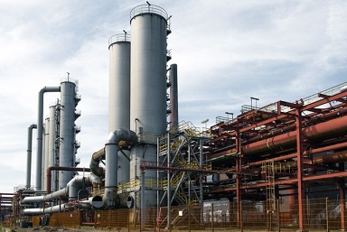
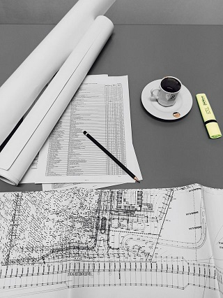
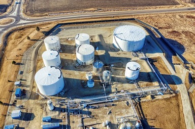
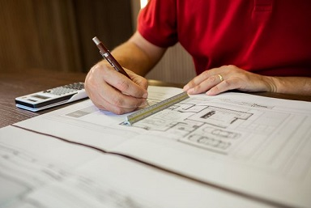
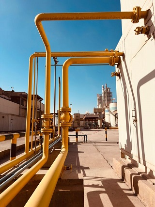
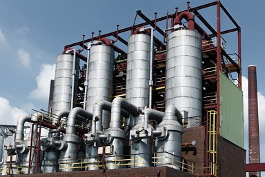
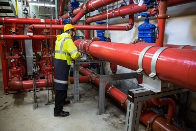
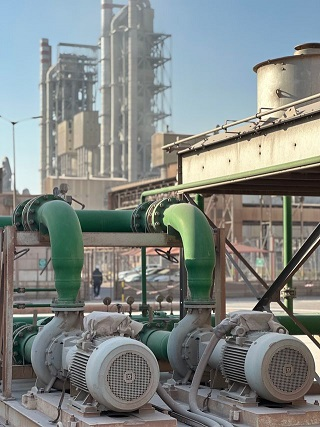

Complete Process Plant Design and Engineering Solutions
Complete Process Design, Piping Engineering, 3D Plant Modelling, and Equipment Detailing Solutions for Oil & Gas, Chemical Process, and Water Treatment Plants.
Why to hire a full-time process or piping engineer if you need design services occasionally....
Just try our fast, cheap and accurate design services....
Services Provided

# Comprehensive Piping Engineering and Layout Design for Oil & Gas Refineries, Petrochemical Facilities, Chemical Processing Plants, and Water/Wastewater Treatment Plants

# High-Fidelity 3D Plant Modelling using Industry-Standard Platforms for Complete Visual Coordination, Interference Detection, and Equipment Layouts

# Process Flow Diagrams (PFD) and Piping & Instrumentation Diagrams (P&ID) Generation, Modification, and Intelligent Digitization

# Equipment Layout and General Arrangement (GA) Drawings for Modular Skids, Pump Stations, Storage Tank Farms, and Process Vessels

# Piping Isometric Drawings and Spool Drawings Generation complete with Bill of Materials (BOM), Weld Maps, and Material Take-Offs (MTO)

# Static and Dynamic Piping Stress Analysis including Thermal Expansion, Support Optimization, and Flange Leakage Checks

# Detailed Design of Process Equipment such as Heat Exchangers, Distillation Columns, Reactors, Clarifiers, Filters, and Chemical Dosing Skids

# Pipe Support Design and Detailing covering Standard, Variable Spring, Rigid, and Specialized Structural Pipe Rack Supports

# Skid-Mounted Process Package Design for Modular Chemical Injection, Water Filtration, Gas Conditioning, and Pump Skids
# As-Built Plant Modelling and Intelligent Laser Scan Conversion from 3D Point Cloud Data to Fully Executable 3D CAD/BIM Models
# 2D to 3D Plant Model Conversion, Redrafting, and Legacy PDF Blueprint Migration into Intelligent 3D Plant Formats
# PDF/Hand Rough Sketch to AutoCAD Piping Drawing Conversion